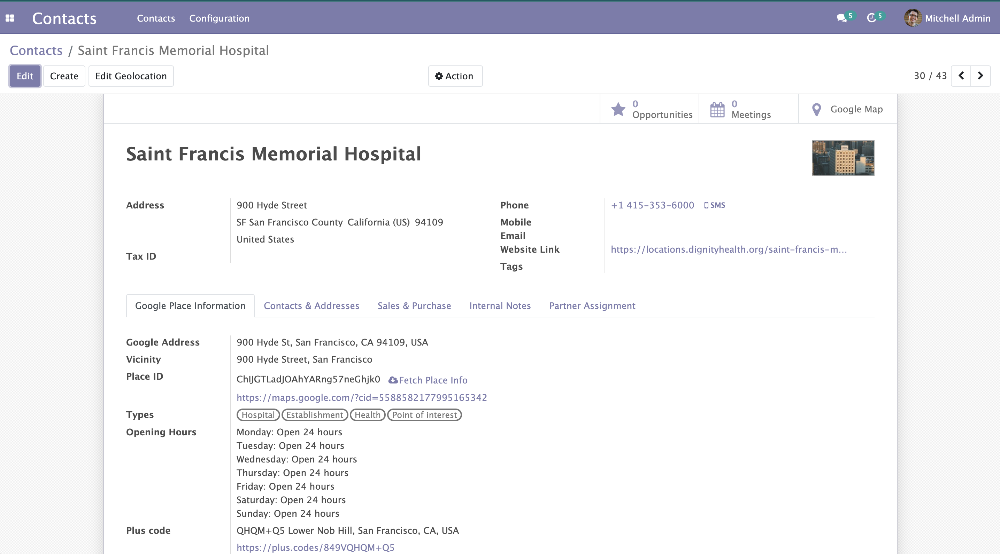
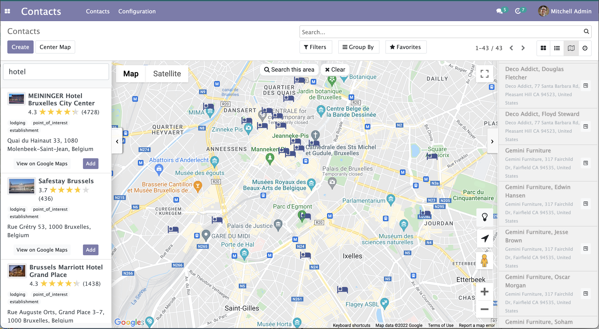
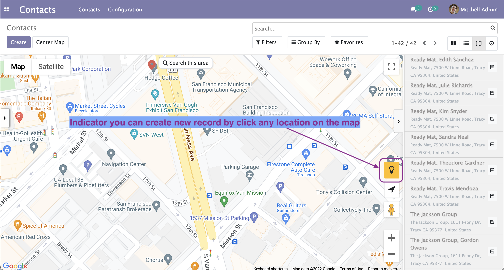

Add additional information to your contacts. This module using Google Places as a source data, so the information you would get should be reliable enough.
This features could help you find your potential customer easily from Google.
You can create a new contact within Google maps view by:

New tab "Google Place information" on your contacts

Find any place such as coffee shop, restaurant, hotel, apartment on any area that you want to discover

Create new record from the map by simply click any location or place. Zoom in until the indicator turned yellow
This module required you to configure Google API Key. For more details please check https://developers.google.com/maps/documentation/javascript/places
After you finished configure Google API Key, you need to enable the following API & Services
Support & maintenance: Yopi Angi